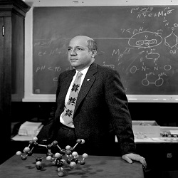
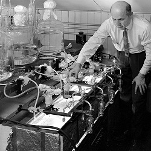
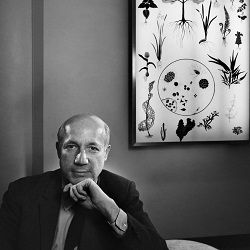

El doctor Melvin E. Calvin, realizo una de las investigaciones más importantes en la historia de la fisiología vegetal, al describir como las plantas toman la energía del sol para crear carbohidratos a partir de agua y dióxido de carbono.

En 1961 el doctor Calvin, recibió el premio nobel de química por su investigación en la asimilación del dióxido de carbono por las plantas, con lo que se pudo explicar el proceso de la fotosíntesis. visita el tributo al premio nobel

El trabajo ganador del nobel inicio en 1947, en los laboratorios de la universidad de Berkeley en california – Estados Unidos, a partir cultivos del alga verde: Chlorella pyrenoidosa, en donde se utilizó carbono 14 para marcar las moléculas que entraban en el ciclo..

Por la importancia de sus aportes científicos recibió numerosos reconocimientos, como: el premio nobel de química, membrecía en la academia nacional de ciencias, la sociedad real de Londres, la real academia de ciencias y letras de los países bajos. doctor honorario de la universidad de Michigan, Nottingham y Oxford.